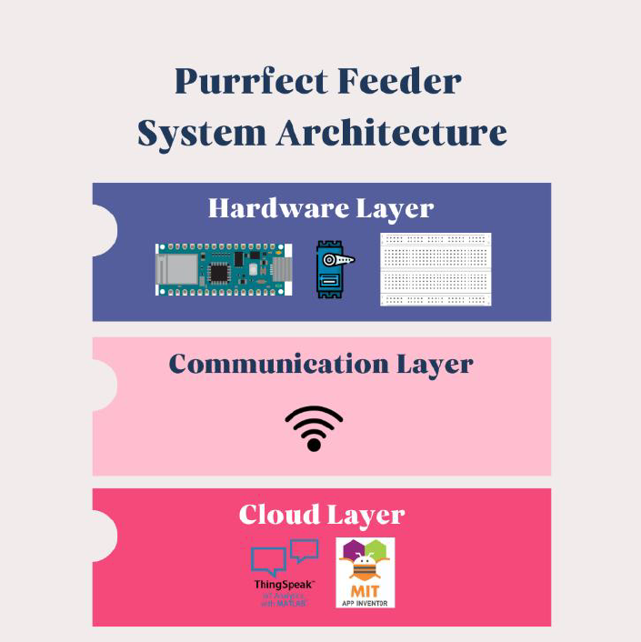
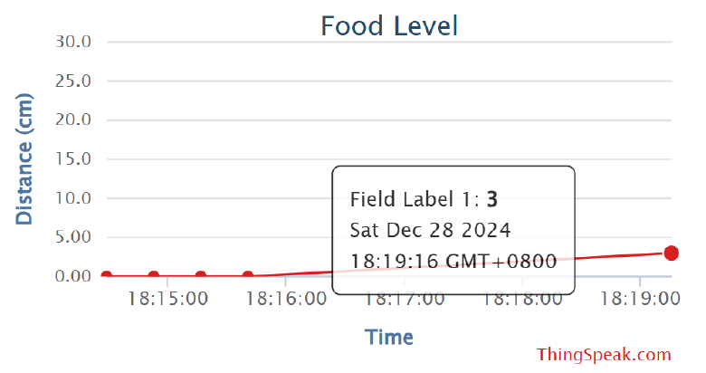

An IoT-based smart pet feeder that automates feeding schedules, monitors food levels in real time, and allows remote control through a mobile app.
Purrfect Feeder is an IoT-based smart pet feeder designed to automate and remotely manage feeding schedules for cats. Using the Arduino Nano 33 IoT, this system integrates sensors, actuators, and cloud services to ensure timely feeding, monitor food levels, and provide insights through a mobile app.
Many pet owners struggle to maintain consistent feeding schedules due to work or travel commitments. Irregular feeding can lead to health issues such as overweight or digestive problems. Traditional solutions like asking friends or pet hotels are costly or impractical.
Purrfect Feeder offers a reliable, convenient, and affordable solution. Real-time monitoring and automated feeding reduce the risk of overfeeding or underfeeding. Owners can track feeding schedules and receive alerts through a mobile app, ensuring their pets are cared for even when away.
The system follows a three-layer IoT architecture: Hardware, Connectivity, and Cloud. The Arduino Nano 33 IoT controls sensors and actuators. Wi-Fi connects the device to the cloud (ThingSpeak), enabling real-time monitoring and control via a mobile app.

The ultrasonic sensor monitors food levels, while the servo motor dispenses food. Data is transmitted via Wi-Fi to ThingSpeak, accessible through a mobile app built with MIT App Inventor. This integration ensures seamless automation and remote management.
Sensor data is uploaded to ThingSpeak and displayed as graphs and alerts. The system supports trend analysis and threshold-based notifications, helping owners plan feeding schedules and maintain their pet's health.

Challenges included mobile app development, sensor reliability, and integration of hardware and software. Solutions involved tutorials, troubleshooting, independent power sources for sensors, and extensive testing to ensure smooth operation.
Future improvements include integrating a weighing scale for precise portions, battery backup with solar options, smart home integration (Google Home, Alexa), and scalability for commercial use in shelters or veterinary clinics.